A strange animal in a shoreline picture has lost its label. Follow the evidence from the tide pools to the museum before the exhibit’s visitors arrive.
A shoreline photograph arrives at your field station with an empty label. Your team has until the next class arrives to leave a clue they can check for themselves.
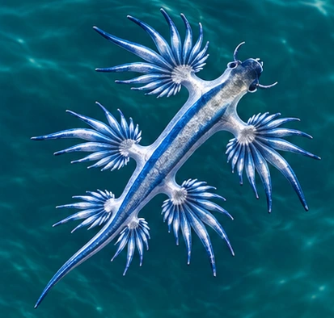
Start With an Arrow
You nearly write “blue plant” on the empty label. Then you spot a thin blue body with fingerlike parts spreading to both sides. You draw an arrow to the middle and keep the name space open.
What two features would you point out to someone who sees the picture for the first time?
Check the evidence
I would point to the narrow body and the fingerlike parts that spread out on both sides.
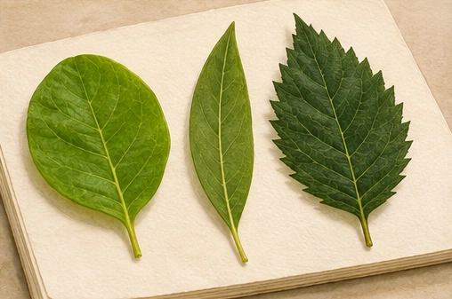
A Guess About the Leaves
Three leaves are already spread on the station table. Your teammate slides the two broad ones together and guesses that their edges will match. You look at all three leaves and decide to test that guess.
Which two leaves would go together if your only rule were that the leaves must be broad?
Check the evidence
The broad bright-green leaf and the broad dark-green leaf would go together.
Follow the Smooth Edge
You open a close-up of the bright leaf and trace its outside edge on the screen. Fine veins reach toward the edge, and the edge itself makes a smooth curve. You sketch the curve as your first piece of evidence.
Where should you look to decide whether this leaf has teeth?
Check the evidence
Follow the outside edge, where the green leaf meets the pale background.
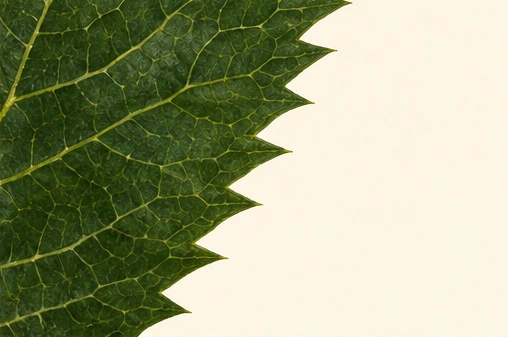
The Edge That Keeps Changing Direction
The dark leaf fills the next close-up. Your finger follows the edge out to a point and back to a notch, then out again. You turn the screen so your teammate can follow the same path.
What repeats along the dark leaf’s edge?
Check the evidence
Pointed teeth and the notches between them repeat along the edge.
잎의 가장자리에서 단서 찾기
매끈한 잎과 톱니 잎에서 선이 지나가는 모양을 대조하세요. 마지막에는 세 잎이 어떻게 묶이나요?
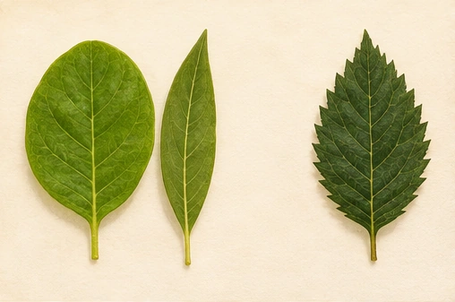
Move One Leaf
You make a smooth-edge group and a toothed-edge group. The narrow leaf joins the broad bright leaf because their edges match. Your teammate moves the broad dark leaf across the gap and writes down the rule the next class can use.
Why do the two leaves on the left belong together even though one is much narrower?
Check the evidence
They share the feature we chose for this classification. Both have smooth edges.
You pull a blank species card from the drawer for your shoreline find. Before you fill it in, you open another team’s field record to see what evidence belongs on a species card.
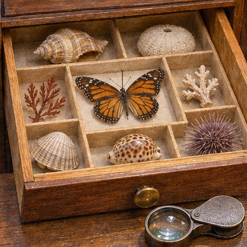
교재 451쪽
The Butterfly Family Record
The first page shows a pair of monarch butterflies. Their wings look alike, and you want to know whether the record holds stronger evidence that they belong to the same species.
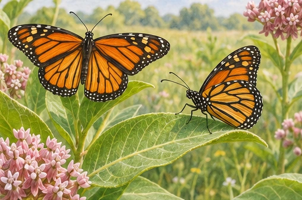
Compare Two Adults
One monarch spreads its wings and the other holds its wings high. You can still see orange patches, black veins, and little white spots on both. You record those shared features and turn the page to see whether the adults had offspring.
Can you find a wing feature that appears on both adults?
Check the evidence
Both have orange wings with black veins and white spots along the edges.
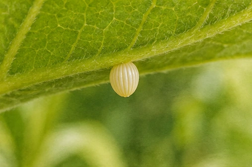
Under the Milkweed Leaf
The field record says the two adults mated. Their first offspring started as the egg in this close-up. You look under the leaf in the picture and find a pale egg with thin ribs running down its sides.
Which part of the milkweed leaf is the egg attached to?
Check the evidence
The egg is attached to the underside of the leaf.
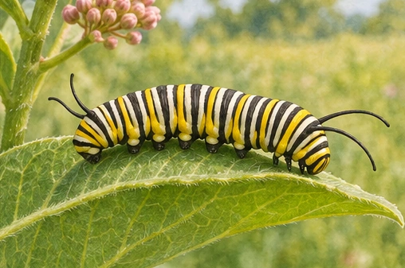
A Striped Visitor in the Next Photo
The record follows the egg until it hatches. In a later picture, a striped caterpillar grips a milkweed leaf with its legs. You line up the two pictures and leave room for what this offspring will become.
What marks can you see along the growing caterpillar’s body?
Check the evidence
Black, white, and yellow bands repeat along its body.
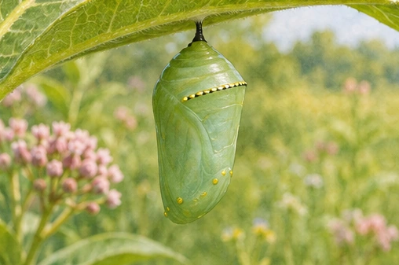
A Clue Hanging From a Leaf
The next photo shows a green chrysalis hanging under a leaf. Inside, the monarch is changing into an adult. You keep following this individual in the station’s record because a grown offspring can give you the next clue.
Where is the chrysalis attached to the plant?
Check the evidence
It hangs from a small dark attachment point beneath the leaf.
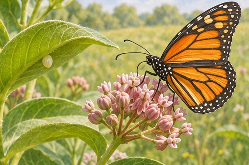
Another Egg and Another Generation
The grown offspring appears on another milkweed plant, near the egg it laid. You read the final note, which says the new egg later hatched. The first pair produced offspring, and that offspring could produce offspring of its own. You finally have the evidence you wanted for the species card.
What does the note that the new egg hatched tell you about the first offspring?
Check the evidence
It grew into a fertile adult and could produce offspring of its own.
두 세대의 기록 읽기
처음 나온 알과 성충이 된 뒤 나온 알을 찾아보세요. 두 알의 역할은 어떻게 다른가요?
A Card Another Station Can File
On the card you write Danaus plexippus, the monarch’s two-part scientific name. Your teammate underlines Danaus, the genus that groups several closely related species. Together, the two words identify just this species. The system Linnaeus used to give species two-part names is called binomial nomenclature.
Which word would help another station look for closely related butterfly species?
Check the evidence
Danaus is the genus, which is the first word.
You slip the monarch card into the cabinet and reach for the empty shoreline card. The cabinet starts with a much wider group than a genus.
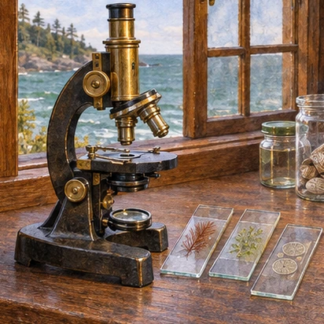
교재 452–453쪽
The Field Station’s Biggest Drawer
You bring the shoreline photograph back to the cabinet. To find the right drawer, you need to determine what the animal is and see how its group fits inside larger groups.
Match the Branching Shape
In the station’s marine guide, your team finds a sea slug with the same narrow body and branching parts. You slide the shoreline picture beside it and compare the two outlines. The guide files sea slugs with other animals related to snails. Using evidence like this to study how organisms are classified is called taxonomy.
Which two features help you match the shoreline photograph to the guide?
Check the evidence
In both pictures there is a narrow central body with groups of fingerlike parts along the sides.
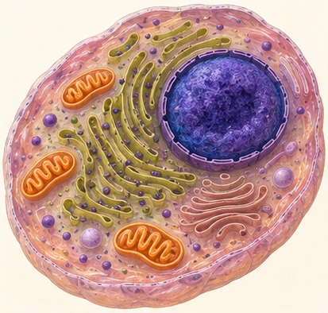
Find the Nucleus
The guide puts the sea slug in Eukarya, one of the three domains. A domain is the broadest group in the cabinet. You turn over an animal-cell model card and see a dark round space with a boundary. It is the nucleus, where most of the cell’s DNA is kept.
Which visible part of the model holds most of this cell’s DNA?
Check the evidence
Most of this cell’s DNA is inside the dark, round nucleus. In the model, you can see a boundary around it.
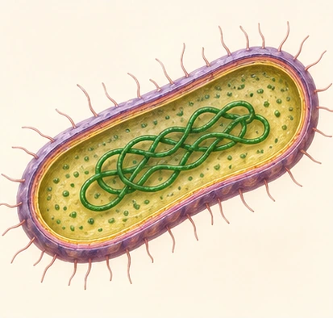
A Loop in a Bacterial Cell
You lay the next model card beside the animal cell. A twisted strand of DNA loops across the inside of the cell without a nucleus around it. You place this card in the Bacteria drawer.
Where is the looping DNA relative to the cell’s outer boundary?
Check the evidence
It is inside the cell, with no nucleus enclosing it.
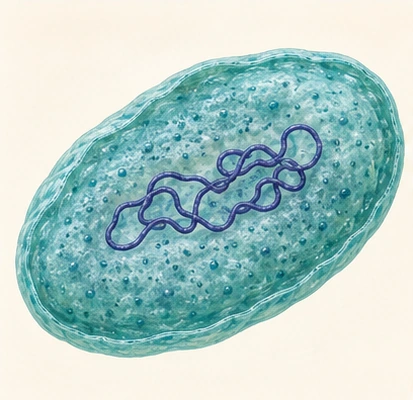
Keep Two Drawers Open
The Archaea card also shows DNA with no nucleus around it. You keep Bacteria and Archaea in separate drawers after checking the station notes. Both are single-celled, and scientists use differences in their cell structures and chemical processes to classify them.
What clue do both the archaeal and bacterial cell models show?
Check the evidence
Both show DNA inside the cell without a nucleus around it.
세 모형에서 DNA 위치 찾기
세포마다 DNA가 어디에 있는지 살펴보고, 핵의 경계가 어느 그림에만 보이는지 확인하세요.
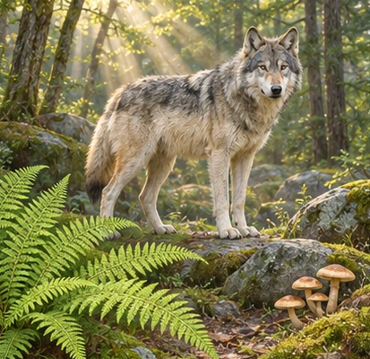
One Forest, Several Groups
On the cabinet’s forest chart, you point to a gray wolf, a fern, and some mushrooms. Their cells have nuclei, so their cards can all start in Domain Eukarya. The gray wolf continues through the animal Kingdom while the fern and mushrooms go to different kingdoms. The chart gives you a trail to follow through Domain, Kingdom, Phylum, Class, Order, Family, Genus, and Species.
At which rank can a wolf, a fern, and a mushroom share one group in this chart?
Check the evidence
They all share the broadest rank, Domain Eukarya.
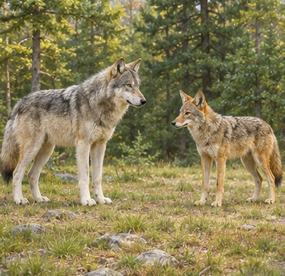
Two Stay Together in Genus
In Family, the chart groups the gray wolf with the coyote and fox. You follow the gray wolf to the next rank, Genus. The wolf and coyote stay together in Canis, and you move the fox card to its own genus.
Which familiar animal drops out of the gray wolf’s group when you move from Family to Genus?
Check the evidence
The fox drops out. The wolf and coyote remain in the same genus.
회색늑대가 속한 범위 좁히기
과에서 속으로 넘어갈 때 그림에서 어떤 동물이 빠지는지 확인하세요.
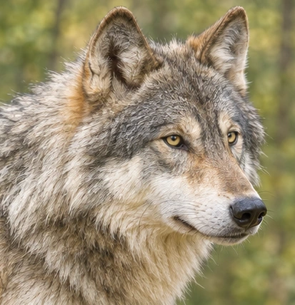
The Last Drawer
You reach Species and slide just the gray wolf card into the final space. The coyote shares the gray wolf’s genus and belongs to a different species. Your teammate looks back up the chart to see how far the two cards traveled together.
Which group contains more kinds of organisms in the chart, the wolf’s Kingdom or its Phylum?
Check the evidence
The wolf’s Kingdom contains more kinds because it includes the wolf’s Phylum and other phyla.
The shoreline card now reads “sea slug.” Your team can defend that label with two visible features. In the next drawer, three different mushrooms all have the same everyday name. How will you tell their labels apart?
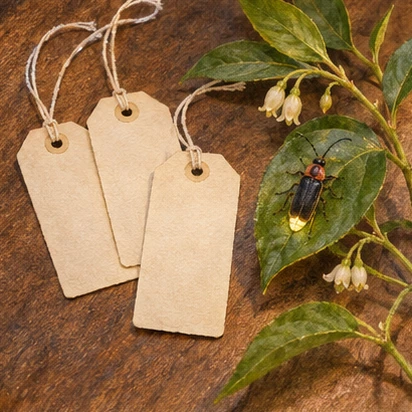
교재 454–455쪽
Two Names for One Flash
The field station opens in ten minutes, and you are putting names under the pictures for the visitors. Two volunteers have left different names on the same photograph. Which one belongs on the card?
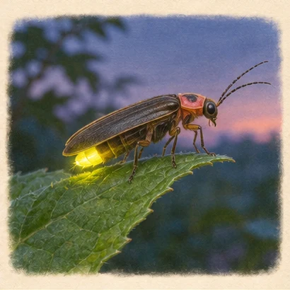
Two Notes on One Photo
You lift the photograph by one corner. One volunteer wrote “firefly” on the back and the other wrote “lightning bug” beside the very same picture. Your pencil hovers over a second label until you notice the one insect and its bright glow at the back of its body.
What shows that the two names refer to the same sighting?
Check the evidence
Both notes are on the same photograph. It shows one insect with a glow at the back of its body.
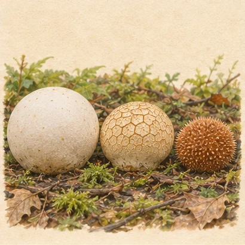
One Word for Three Mushrooms
Then you try the simple label “puffball” on the mushroom tray. All three are round, so the word fits all three cards. You move the cards apart and make a sketch of each surface before you try to match the names.
Which visible details would help a visitor tell the three mushrooms apart?
Check the evidence
One is pale and smooth, one has a cracked pattern, and the smaller brown one has short spines.
Read the First Word
The station guide gives you three names in tray order. The smooth one is Calvatia gigantea, the patterned one is Calvatia craniiformis, and the spiny one is Lycoperdon echinatum. You circle the first word on the first two cards and place them side by side. A moment ago all three had the same label, and now you can show which two share a genus.
Which mushrooms share a genus, and what on the cards proves it?
Check the evidence
Calvatia gigantea and Calvatia craniiformis share the genus Calvatia. It is the first word on both cards. Their second words identify different species within that genus.
The Card Stays Put
You turn back to the photo of the flashing insect and find its entry in the guide. The station card will read Photinus pyralis, with both words in italics and a capital P on Photinus. The other volunteers reach the door just as you slide the card under the photograph.
How would you write the scientific name on the printed card?
Check the evidence
Write Photinus pyralis in italics. Photinus is the genus and starts with a capital P. The second word, pyralis, stays lowercase.
The guide hands you a blank card. “An animal is hiding under a piece of bark out back. Let's look closely enough to give it a name.”
교재 455쪽
The Claws Under the Bark
You take the blank card and your field notebook to the trail. Something small moves as the guide lifts a piece of bark. You have time to take a photo before it slips into a crack.
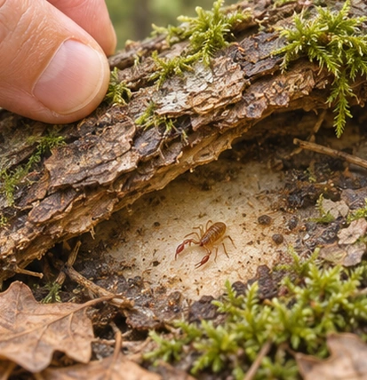
A Name Can Wait
Two tiny pincers stick out in front. “Scorpion?” says a visitor, leaning in. You leave the name line blank and make a note of what you can see in the photo first.
Which visible feature made the visitor guess scorpion?
Check the evidence
The animal has two clawlike pincers in front. The key will ask for more features before you choose a name.
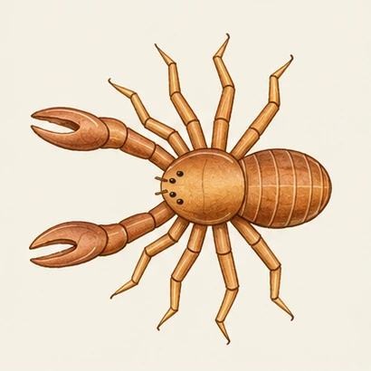
Eight Walkers
In the enlarged view, you put a pencil dot beside each leg that reaches out from the body and helps the animal walk. The two pincers sit in front of those legs and have a job of their own. You find four walking legs on each side and follow Step 1a to Step 2.
Which parts count as the eight legs in Step 1a?
Check the evidence
Count four walking legs on each side. The paired pincers are separate appendages at the front.
Two Body Regions
You trace around the rounded front region and then around the oval abdomen behind it. Two body regions send you along 2b to Step 5. Now you draw a short line to the pincers you noticed by the bark, and 5a sends you to Step 6.
Which two features tell you to follow 2b and then 5a?
Check the evidence
The separate front region and oval abdomen give you 2b. The two clawlike pincers give you 5a and lead to Step 6.
Look Past the Abdomen
You slide your pencil along the back of the oval abdomen. The picture shows the body ending there, without a tail or stinger. You finally fill in the name on the blank card and write the route beneath it, 1a → 2b → 5a → 6b.
What does Step 6b let you write on the card for specimen A?
Check the evidence
Pseudoscorpion. The abdomen ends without a tail or stinger, so Step 6b identifies it.
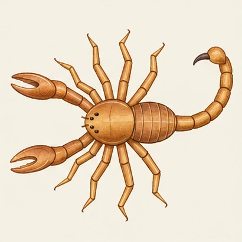
One Choice Changes
The visitor holds up the station's second model. You find the same eight legs, two body regions, and pincers, so the first three marks in your notebook still fit. This time a long jointed tail curls up from the abdomen and ends in a pointed stinger. You change the last mark to 6a and write Scorpion on a second card.
What changes the result for specimen B, and which steps stay the same?
Check the evidence
The long tail with a stinger leads to 6a, scorpion. The first three choices are still 1a, 2b, and 5a.
두 표본이 갈라지는 단서
왼쪽과 오른쪽 표본의 몸 끝을 먼저 보고, 다음 장면에서 침의 윤곽을 따라가세요.
두 표본을 검색표에서 직접 움직이기
표본 A를 먼저 따라가고 표본 B로 바꿔 보세요. 두 경로가 어느 선택에서 갈라지는지 찾아보세요.
A volunteer helps you carry both cards inside. At the museum case, four whale pictures are waiting for new cards of their own. The guide asks you to look at their feet first.
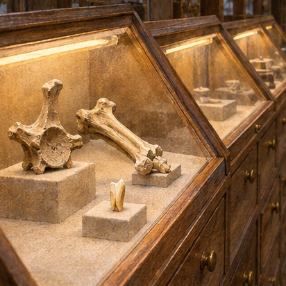
교재 456쪽
Who Moved This Way?
Four pictures wait in the museum case beside your field notebook. The guide has mixed up the cards for walking, paddling, and swimming. You turn to a new page and look for body parts that could do each job.
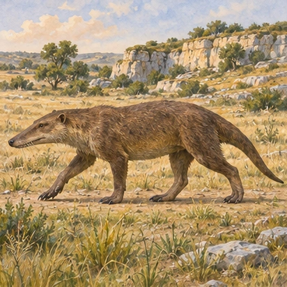
Feet on Dry Ground
In the first fossil reconstruction, Pakicetus takes a step across dry ground. You follow each long leg down to its own foot and count all four. The legs reach down under the body, so you slide the land card under this picture.
What visible evidence supports the land card?
Check the evidence
Pakicetus has four long, jointed legs with feet that can bear its weight on the ground.
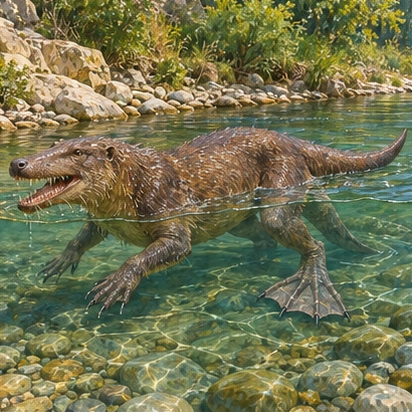
A Foot That Can Paddle
You nearly give Ambulocetus the same card when you see its legs. Then you spot the wide hind foot in the clear shallow water. You sketch its spread toes and add a note that a broad foot could push against more water during a paddle.
What makes this hind foot a useful clue about swimming?
Check the evidence
Its spread, broad shape gives it more surface to push against the water. The reconstruction also shows jointed limbs.
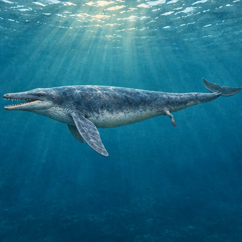
The Almost-Missed Hind Limb
You trace the edge of Dorudon's large front flipper and then look farther back. A little bent limb sticks out beneath the rear of the body. You put a star by it in your notebook because the tiny limb would do little to support an animal on land.
Where is the tiny limb, and how does it compare with the front flipper?
Check the evidence
The tiny hind limb sits far behind the broad front flipper and well ahead of the tail. The two structures differ greatly in size.
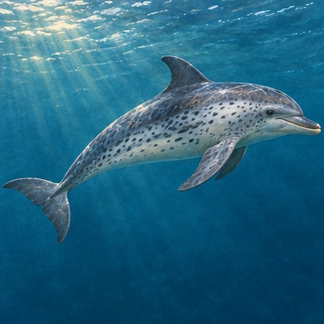
The Dolphin Finishes the Display
You follow the tail of the living Atlantic spotted dolphin out to its two flukes. The front flipper helps steer, and the flukes move up and down to drive the dolphin through water. You read your four cards in order and write one sentence for the case. These separate examples give us clues to how bodies changed across many generations of related animals.
Which structures help the dolphin move, and what does comparing all four pictures show?
Check the evidence
The dolphin has front flippers and a horizontal pair of tail flukes. The four pictures show different animals whose body structures give us evidence about changes in how their relatives moved over many generations.
다리와 지느러미를 대조하기
체중을 받치는 발과 물을 미는 발을 찾아보세요. 도루돈의 작은 뒷다리는 어느 쪽에 있나요?
You set your notebook on the windowsill. A robin crosses the clearing and a dragonfly skims the pond. Both stay in the air, and you want to see what each one uses to fly.
교재 457쪽
The Wing Bracket
The field station is about to open its exhibit when a classmate takes your pencil bracket to mean that the robin, the bat, and the dragonfly belong on one branch of the family tree. You have time to check three close-ups before the card goes up.
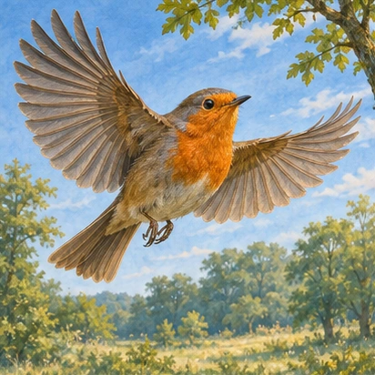
A Claim in Pencil
A robin spreads its wings over a clearing. You set its picture beside the bat and dragonfly pictures, and draw a bracket around their names. Your classmate reaches for a label that says “Close relatives,” but you slide the close-up folder onto the table first.
What has the team established by seeing all three animals fly?
Check the evidence
The animals share an ability. A comparison of the parts that make flight possible can help the team test the claim about relatives.
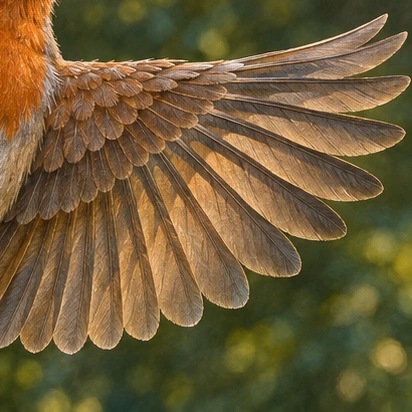
A Row of Feather Tips
You hold the robin close-up next to your bracket. Short feathers overlap near the shoulder, and long feathers fan out at the far edge. You sketch two of the long tips, then pass the pencil to your classmate to find the same detail in the bat picture.
Where would you draw a line from the label “feathers” on this picture?
Check the evidence
Point to the long, separate tips along the wing edge. Farther in, each long feather overlaps the one beside it.
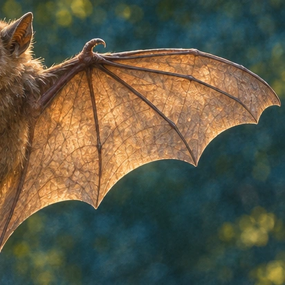
Light Through the Wing
The bat picture holds your classmate’s pencil in the air. Light shines through a thin sheet stretched between long fingers. You follow the dark lines back toward the hand and make a second sketch beside the feathers.
What supports the sheet in this wing?
Check the evidence
Long finger bones support the thin membrane. The dark rays show where the fingers run through it.
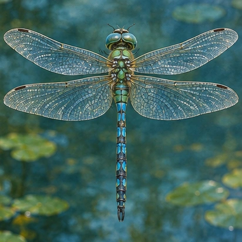
Four Separate Tips
You turn the dragonfly picture face up with its head at the top. A narrow wing reaches forward on each side, and a second wing angles back toward the tail. You count the tips one at a time while your classmate gives the dragonfly its own sketch box.
How can you check the count if the wing bases look crowded?
Check the evidence
Find the two separate wing tips on each side of the body. Follow the outlines inward to see where each forewing and hindwing meets the thorax.
날개의 구조를 따라가기
깃털의 겹, 박쥐의 손가락뼈, 잠자리의 앞날개와 뒷날개에 붙는 선을 차례로 보세요.
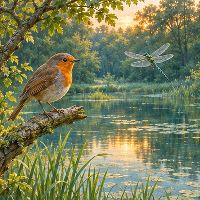
One Ability, Three Histories
Out by the pond, the robin settles on a branch while a dragonfly hovers over the water. Back inside, you rub out the family bracket and write “Flight” above the three drawings. Flight evolved separately in these three groups, an example of convergent evolution. Your classmate leaves room on the card for evidence about ancestry.
What could the team compare next to test a claim about ancestry?
Check the evidence
Researchers compare more detailed structures and use DNA evidence, too. Those comparisons help them decide how closely different organisms are related.
You keep the eraser beside the evidence log and open the next case sheet. This time there are five questions to support on your A4 paper.
교재 458쪽
Five Slips for the Evidence Log
Your classmate sets five blank slips beside the evidence log. Each slip must point you to a piece of evidence you can check before you write your own answer to page 458.
Follow the Record
You open the monarch file and find observations from more than one generation. A picture of an adult takes only a moment to study, so you also turn to the record of what happened later. Your classmate marks the line that would help with the first question and leaves space on the first slip.
Which record belongs on the first slip, appearance during one visit or an observation about offspring over time?
Check the evidence
Choose the record about offspring over time. Read the question closely and underline the two things it says happened.
Use the Column Headings
The three leaves on the worktable send your eye straight to their outlines. On the next slip, however, the evidence comes from the tree chart on page 458. You lay a ruler under one row and move it down the chart, checking the same headings each time.
What should you copy from the chart before explaining a comparison?
Check the evidence
Copy the exact entries from the columns you used. Record which level the entries share and where they first differ so you can explain your choice.
Practice table · Trace across one row at a time. The tree chart for your assignment is on page 458.
Animal
Family
Genus
Red fox
Canidae
Vulpes
Arctic fox
Canidae
Vulpes
Brown bear
Ursidae
Ursus
Mark a Change
You return to the whale-relative pictures. At the station you can place the reconstruction beside a second picture and point to the same body region on both. You leave two lines on the third slip, one for the evidence you see and one for what it suggests.
Which makes a stronger note for the third question, “they look different” or a comparison of the same body part?
Check the evidence
Compare the same body part and record the detail you can point to. On your A4 paper, explain how evidence like this helps scientists decide where to place organisms.
Find the Earlier Idea
For the fourth slip, your classmate reaches for the newest picture in the whale file. You keep it on the table and open page 456 to the paragraphs about Darwin. You want one detail that helps explain how scientists’ ideas about species changed.
Where can you check both what Darwin compared and the idea he developed?
Check the evidence
Use the Darwin paragraphs on page 456 alongside the figure. Choose a detail from the reading that will help you explain a change in thinking in your own words.
Keep the Claim Open
The last slip carries a claim about a pet ferret and a wild ancestor. An online search returns several names, and your classmate nearly chooses the first one. You copy the names into a column and leave the next column for sources that compare them.
What would help you choose between sources that offer different names?
Check the evidence
Look for an identifiable museum or research source that names the animals it compared and shows how it reached its conclusion. Keep a note of the source you can verify.
You turn the slips into your own full English sentences for page 458. Under the last slip is a fresh envelope with two photographs and the same name written on both.
교재 459쪽
Two Cards Labeled Panda
The field station’s last envelope is from the museum curator. Two photographs inside are both labeled “panda,” and both need a place on the exhibit’s family tree.
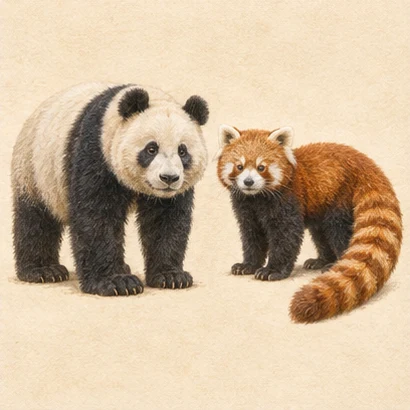
The Tempting Name
You almost tuck the two cards under the same clip. The giant panda's black legs stand below a broad, heavy body. The small red panda has a long ringed tail, so you undo the clip and ask for another picture to compare.
Which detail makes you pause before clipping both cards to the same branch?
Check the evidence
The red panda’s long ringed tail stands out beside the giant panda’s heavy body. The common name gives you the question to investigate.
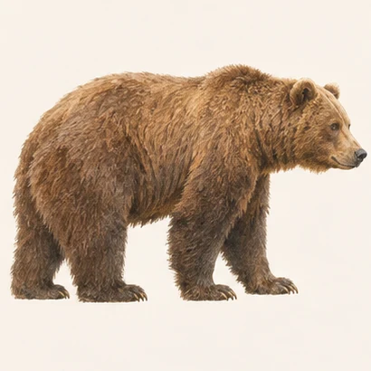
A Bear for Comparison
You prop a bear picture against the giant panda card. A broad body, thick fur, and strong legs make the pairing look plausible. Your classmate remembers that a raccoon also has a ringed tail and writes that clue beside the red panda. The two cards now lead to different comparisons.
What should the two appearance notes lead the team to do?
Check the evidence
Use each resemblance as a clue. Fill in the rest of the comparison with other structures and DNA evidence when it is available.
The Second Line of the Report
You unfold the curator’s note about studies that compared DNA from both pandas with DNA from other mammals. The first line places the giant panda in the bear family, Ursidae. You move its card and start to slide the other one along with it, then stop at the second line. The red panda belongs to Ailuridae, a separate family.
What made the team move the cards to separate branches?
Check the evidence
The classification follows the results of the DNA comparisons. The giant panda belongs with bears, and the red panda has its own family.
The curator’s two exhibit cards
Animal
Family
Comparison that mattered
Giant panda
Ursidae
DNA comparison with bears
Red panda
Ailuridae
DNA comparison with other mammals
The Visitor at the Tree
Later, a visitor spots the two panda labels and asks which branch to follow. You hand over the evidence log, open to the bear picture and the curator’s note. The visitor traces the branches with a finger and stops at a different place for each animal. Your classmate pins the pencil beside the tree so the next team can record a new clue.
Which entry would you show first to someone who thinks the red panda belongs with raccoons because of its tail?
Check the evidence
Show the DNA comparison. The ringed tail is a useful observation, and the evidence on family relationships places the red panda in Ailuridae.
Before you close the log, write one observation you can point to and one question that would need more evidence.